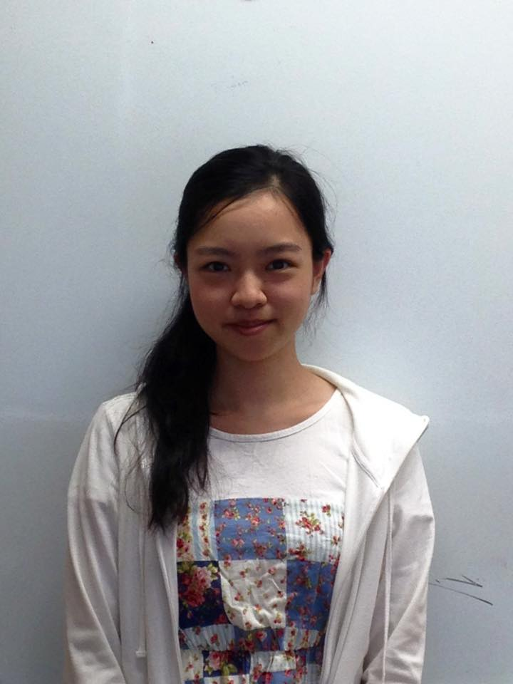
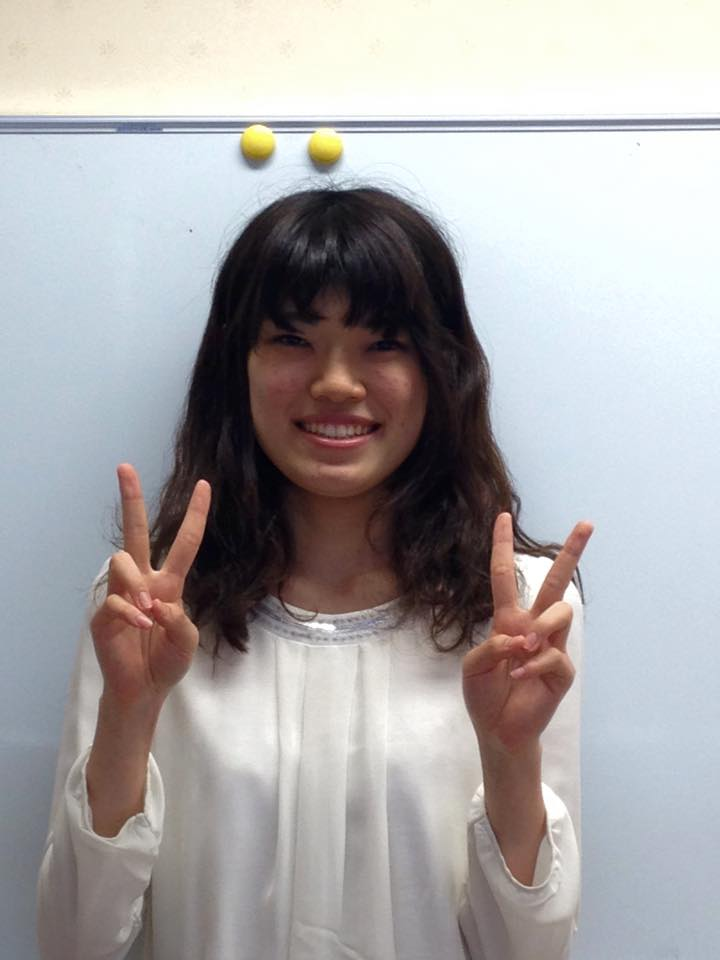
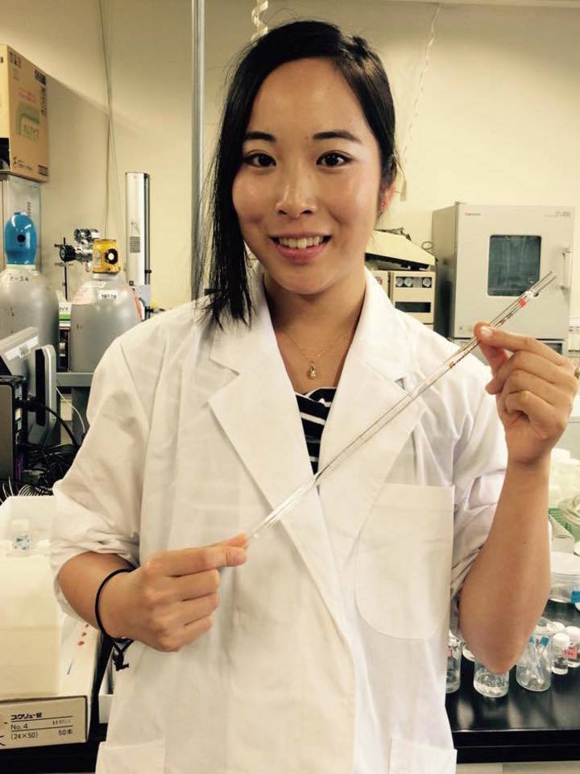
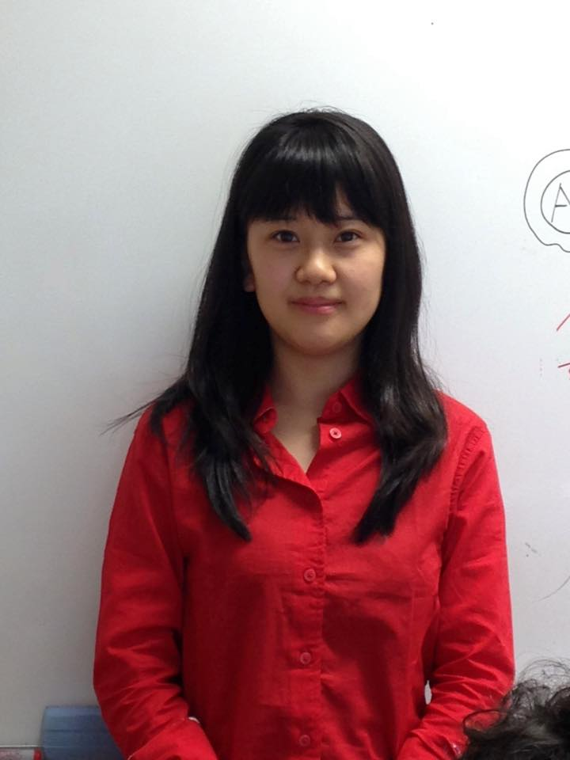
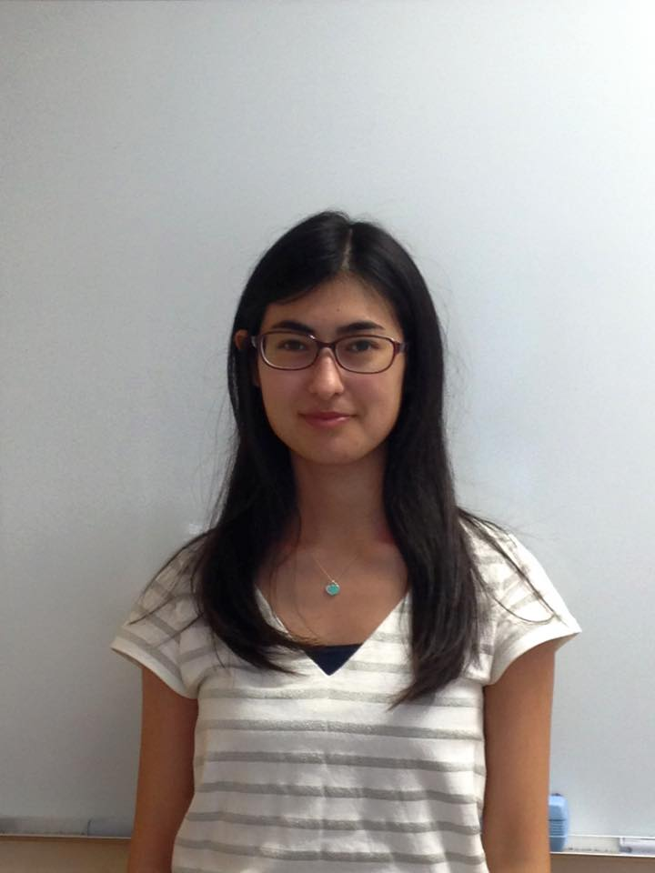
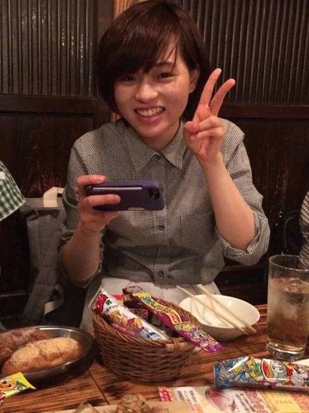
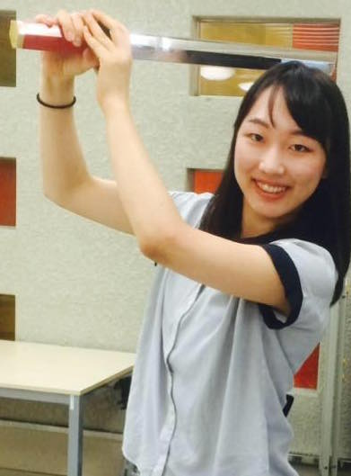
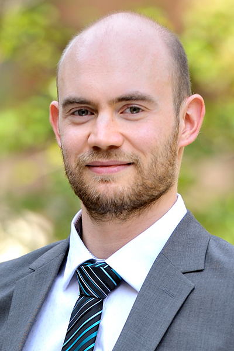

ABOUT US
Our team was inaugurated last April, gathering students from various backgrounds, such as biology, chemistry, information science and physics. None of us were familiar with biomolecular design, and we’ve launched this project from scratch. The idea of making an optical filter from DNA origami is the concentration of each member’s specialty, and our team successfully achieved to suggest a unique idea.
Team Member
|  |  |
| Akiko Iida Biology |
Arisa Nakjima Biology |
 |
 |
| Gina Miku Oba Biology |
Haruhi Kaneko Material Science |
|  |  |
| Kana Fujimoto Biology |
Kaori Nara Biology |
|  |  |
| Luyiyun Liang Biology |
Mai Itagaki Biology |
 |
 |
| Rina Onda Physics |
Sayuri Hashimoto Information Science |
Supervisor
|  |
| Dr. Nathanael Aubert-Kato |
SPONSERS
・Institute for grobal leadership (Ochanomizu university)・Leading graduate school promotion center (Ochanomizu university)